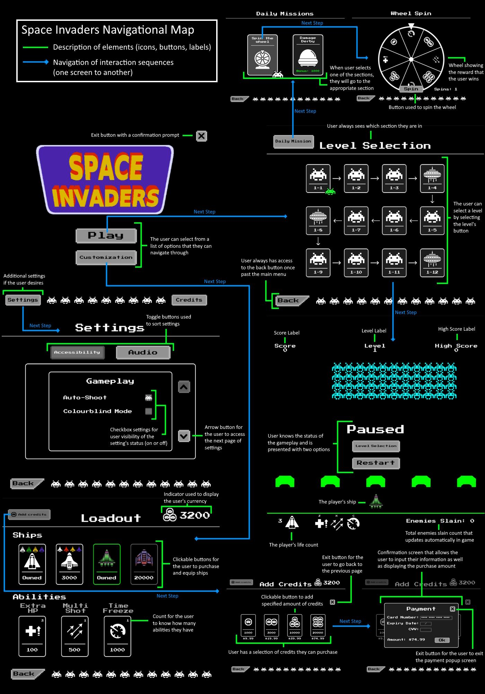
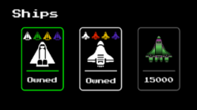
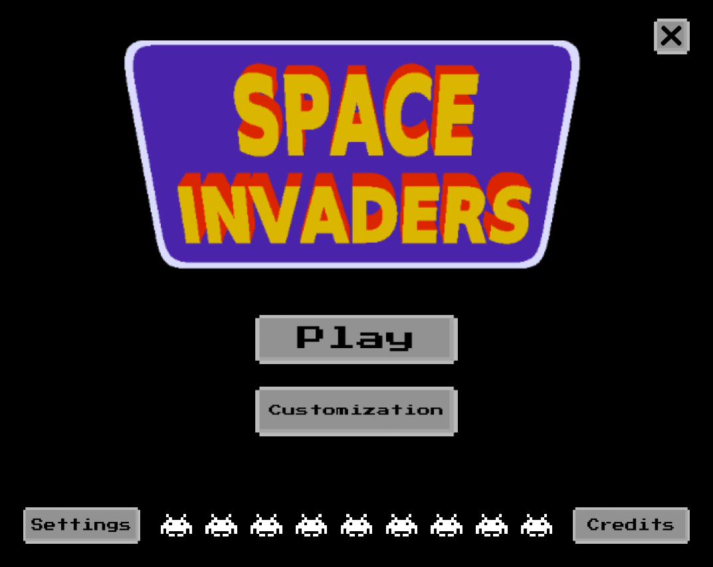
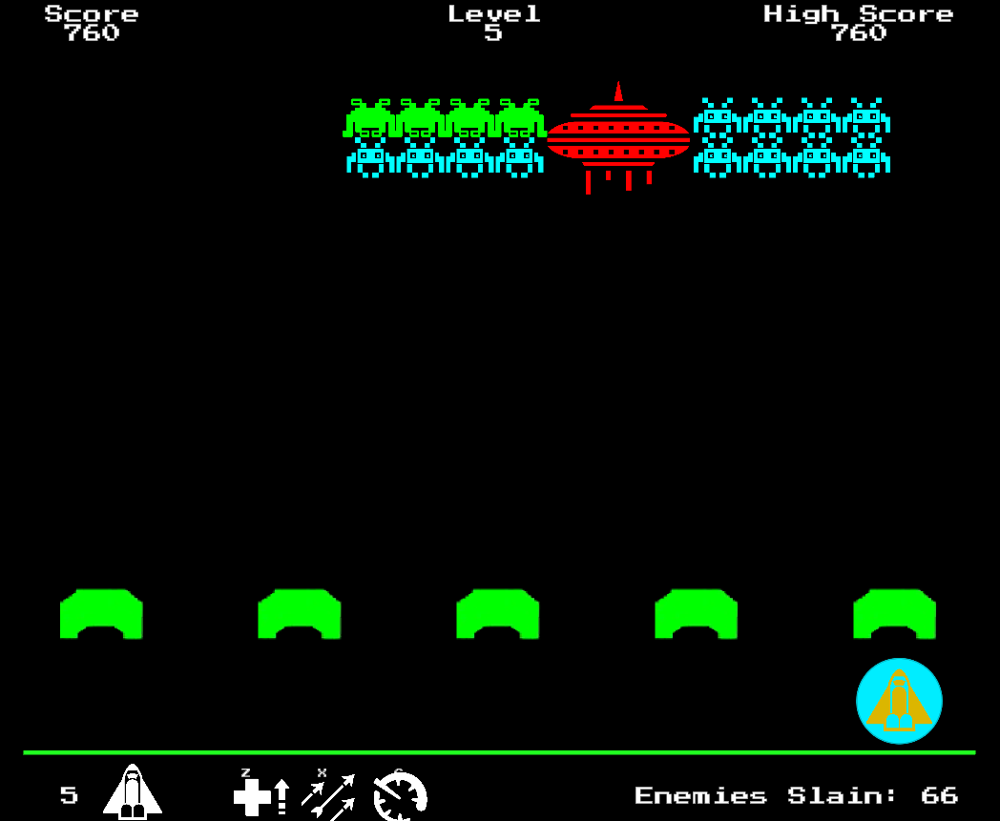

Space Invaders Redesign
Executive Summary
Originally released in 1978, Space Invaders is a classic arcade game developed by Tomohiro Nishikado. It is widely considered to be one of the most influential video games of all time, ushering in what many refer to now as the “golden age” of video games.
In redesigning Space Invaders, our team decided to focus on 4 core principles:
- Gameplay Update: Recreating the game in Unity to use a modern engine that supports a higher refresh rate, resolution, and new control options.
- Accessibility: New accessibility features include auto-shoot, colourblind mode, and customizable keybinds and input methods.
- Game Replayability: Introducing a new Cash Shop and Daily Missions that keep the game fresh and add more layers to the gameplay while increasing revenue potential.
- UI Improvements: Implementing dynamic backgrounds, improved animations and visual effects, and overall more effective use of space to create a more organized and fluid UI experience. Settings and pause menus will also be added.
Our main goal in the redesign was to maintain the “retro feel” of the game, which encapsulates the cultural impact the game has had, while at the same time modernizing it and incorporating the aspects that make a game successful in today’s era. We felt that, in doing so, we can successfully usher Space Invaders into the modern day and not only bring back feelings of nostalgia to people who grew up playing the game but also introduce an entirely new generation to Space Invaders who may not have been born when the game was initially popular.
From an HCI perspective, many design principles were considered in the process of building our redesign, including Progressive Disclosure, Visibility, Affordances, and Constraints. Each of these design principles played a very integral part in our final product and led to what we feel is a game that is not only fun to play and accessible to anybody but also in line with what makes a product considered to be good from a player’s perspective.
Following the completion of our game, we also completed a heuristic evaluation, where we determined that our game performs particularly well in error prevention, user control and freedom, and making the system status clear to players. The main heuristic that needs improvement is in terms of help and documentation, as at the moment we rely heavily on the intuitiveness of the game and have chosen to forgo implementing documentation or tutorial levels. Additionally, there is potential for further improvements to be implemented in accessibility by enhancing visibility, and also in difficulty by adding more dynamic difficulties that account for gameplay elements such as time to complete levels, accuracy, the number of abilities used and more.
Overall, we are very happy with the final product of the Space Invaders Redesign. The process of developing the game has had its ups and downs, but we all feel that we’ve learnt a lot through the process and have come out with a much better understanding of HCI.
Navigational Map of System
Conceptual navigation map: A hierarchical structure has a single entry and exit point at the source “parent” element. It allows forward and backward navigation within each pair of linked elements. In order to conclude the interaction, the user is required to navigate back to the source element. From there, the user can either exit or initiate another interaction sequence.

Design Principles
Progressive Desclosure and Visibility
A focus of the game was to manage the information complexity to only show necessary or requested information at any given time to avoid overwhelming the user. For example, this form of layering was done in the Shop section, where if the player doesn’t have enough credits to make their purchase, they are shown the “Add Credits” pop-up, and after making their selection, they are finally shown the “Make Payment” pop-up.
The Shop also reflects the principle of Visibility, as in the image above, the two shops that cannot be purchased with the current balance are presented differently than those that can, indicating a difference in the visibility of the status.
Affordance
In the process of developing our game, there were many affordances we had to consider, but more importantly, it was important for us to avoid having false and hidden affordances, and instead have the correctly perceived and rejected actions. For example, one of the correctly perceived affordances we incorporated into the game is the functionality that all buttons that afford being clicked on will invert their colour on hover, indicating to the player that they have the ability to click on the button.
Constraints
With our game being a completely digital product, we only considered non-physical constraints, in our case to minimize errors while improving the clarity of design. For example, the audio settings that players can adjust are represented as sliders that limit the possible input values that restrict the values to discrete integer values rather than continuous numbers. Also, by not allowing the player to enter a custom value, we eliminate the possibility of them entering an invalid value such as a letter or other character.
Confirmation
The game uses two instances of confirmations to minimize errors. The first instance is immediately before the player selects a level, where the game asks to confirm their level selection before entering and allowing them a chance to equip exclusive abilities. The second is a confirmation before exiting the game, which is important because if they exit the game accidentally, they have to boot it up again which leads to an unpleasant user experience.
Consistency
Our game employs both aesthetic and functional consistency. The aesthetic consistency exists in the use of a consistent colour scheme, which is a palette of four colours being white, grey, black, and neon green. This consistency adds a consistent style and appearance across the game, allowing for familiarity and comfort. Also, there is aestheic consistency in the coin logo that is used to represent currency, so when players see the logo they always know what it represents.
In terms of functional consistency, the game makes use of a Close button that is used consistently across several screens in the game. By using the same button for each, the player knows what the action of clicking the button will do, allowing for a consistent experience upon clicking the button.
Feedback
There are two instances where feedback is used in the game. First, during gameplay, players get immediate information when firing their laser, as the game includes sound effects as feedback. These sound effects add to the immersion of the game while also confirming to the user that their action has resulted in the desired action while adding a more potent feeling to the lasers being fired in addition to the visual component.
There is also feedback in the Shop section, as when a player selects a ship they own, they will be given instant feedback that their selection has been read and accepted, as the ship they just selected will be highlighted green.

Chunking
In the game, we incorporated the idea of using 4 + 1 chunks to help players make decisions in the game. For example, the Shop page is divided into 2 sections with different chunks. The Ship selection has 4 chunks, and the Abilities selection has 3 chunks. This was done to reduce the cognitive overload required to make a decision, hence simplifying the problem-solving process required.
Metaphor
The game uses several metaphors that translate to a better understanding of the game for most players. One that is not as noticeable is the use of the “Spin the Wheel” daily mission, where once a day the player can spin a wheel which gives a random chance at a reward. This is a metaphor commonly used in games to describe situations where an outcome is uncertain or left to chance. It is often used in a broader sense to describe situations in which a player is taking a risk or making a decision without knowing the outcome, highlighting the uncertainty and unpredictability of life but also in the game.
Mapping
The gameplay portion relies heavily on behavioural mapping, as players move their ship in a left and right fashion depending on their controls, which by default are A for left and D for right. Since A is to the left of D, this translates to a natural movement mapping that is also kinesthetic as it corresponds with physical motion. Finally, on the audio adjustment settings, the increase/decrease are mapped by a slider, which provides an easy perception for the relationship between the action and reaction of adjusting the volume (sliding to the right is louder, to the left is quiter)
Fitt's Law
The game follows the “rule of the infinite edge” in the options, as the buttons’ corners are active when navigating through the UI, which simplifies pointer input as corners are the easiest places to reach due to their infinite dimensions. Also, we tried to maximize target sizes whenever possible while minimizing the distances that pointers must move throughout the UI, both of these contributing to less movement time and errors in selection
Hick's Law
When it comes to decision-making for the player, we thought about putting them in positions where they could make simple and quick decisions. For example, the Start screen only has 5 options on it to keep it as simple as possible and reduce the cognitive load applied on players who are first introduced to the game.

Transfer
For our game, our goal was to introduce as many positive transfers as possible and limit the number of negative transfers. At a macro level, we were able to successfully leverage the positive transfers between other similar video games in terms of player movement and the game’s objective, which is to survive but also to get a high score. By leveraging players’ previous knowledge and bringing it to this new game, we create a desirable effect where players will be able to pick up the game quickly, transferring the usability across applications and platforms.
Control
There are two instances where we incorporated control into the game to allow players to have a more customized experience. First, the settings that we offer the player allows for more control over their individual preferences, allowing them to tweak their experience based on how they would prefer or based on accessibility options. Second, while we dont explicitly include “normal” or “expert” modes, players can still select the level they want to play, where the higher-numbered ones are more difficult. However, these have to be unlocked so that players have a certain level of skill in the game before they can attempt it.
Causality
We realized that causality is a very important principle to keep in mind, as it can really impact the perception that a user has towards an artifact. In our case, we tried to predict and minimze as many false casualties as possible. For example, we intentionally excldued all invisible effects, where commands with no apparent result are re-entered repeatedly. We felt that, by doing this, there will be less frustration on the players’ part in this regard and make the game more polished as a result.
Gestalt Laws of Grouping
We incorporated two of Gestalt’s Laws of Grouping. First was the focal point principle, where in boss levels or the daily mission challenge, the boss is the clear focal point of the level. We accomplished this by colouring the boss differently from ther regular enemies and making it significantly larger, causing it to be processed before anything else and therefore indicating that it is the highest priority amongst the enemies.

We also incorporated the proximity principle, as we generally tried to keep options related to each other in close proximity. For example, in the shop, the 4 ship options are kept in close proximity to each other while the 3 abilities purchases are grouped together. By keeping these groups in proximity of one another, the player has greate awareness of what options are kept together and which are separate.
80/20 Rule
The 80/20 rule was applied in our game mainly in the gameplay elements, as in terms of the variables, they are actually very simple, comprising of just enemies, player models, barriers, and items. However, these few variables contribute to 80 percent of the effects and outcomes generated by the system. Also, when it comes to player performance, we can make the statement htat “80% of player’s success in space invaders comes from mastering 20% of the game’s mechanics”. For example, becoming skilled at dodging enemy fires and efficiently taking out enemy shops could be the key to reaching higher levels. This successfully creates a situation where the game is easy to lear, but hard to master, encouraging players to dedicfate more time and effort in improving.
Flexibility-Usability Tradeoff
We know that generally, as the flexibility of a system increases, its usability decreases. So, in our case, we wanted to strike as much of a balance here as possible by increasing the flexibility by a moderate amount by adding settings for accessibility, level selection, powerups, and ship selection. However, we limited it to these 4 main flexibility options in order to maintain as much usability as possible.
Externalization of Information
We designed the game so that players would not have to rely too heavily on externalization of information as we wanted our game to be as immersive as possible by not requiring players to have to exit the game to have to search for external information. For this reason, we tried to keep the game as intuitive as possible with the player not required to rely on external information online.
Familiarity
As an overarching concept, the idea of spaceships fighting against aliens is generally familiar to people, especially those who grew up with an interest in space, technology, science fiction, and video games. Also, when it comes to other video games, the concept of “lives”, “high scores” and in-game currency should be extremely familiar to people who have played video games of any sort, so we expec this familiarity to improve the overall expereice for players by tying to their existing mental models.
Heuristic Evaluation
Visibility of System Status
Overall, the game provides immediate visual feedback for most interactive events. This can be seen through the use of dynamic affordances in most interactive buttons. The countdown timer for the next daily mission bonus provides continuous feedback to users about the status of the daily bonus wait time. The flashing text cursor in the key binding buttons during a key rebind provides continuous feedback to inform users the system is awaiting their input. The blinking icon during level selection provides feedback to inform users the level they had selected is locked. One area that lacks visibility of system status is the wheel spin feature. The game does not notify the users the wheel spin is unavailable when users exhausts their daily quotas. To improve this, implement a popup to notify users of their availability.
Match Between the System and the Real World
Overall, the game has a good match between the system and the real world. Game uses plain and direct, user-oriented language that should be clear to users of all technical backgrounds.
User Control & Freedom
The game provides good users’ control and freedom. ‘Back’ and ‘close’ buttons are presented throughout the menu system for users to return to an earlier state. During gameplay mode, users can pause and exit from gameplay at any time. One area for improvement is to implement a reset feature for the settings options to give more control to the users in case they want to revert back to the original settings state.
Consistency and Standards
Overall, the game interface design is consistent and complies with existing standards. All interactable buttons are consistent in visual appearance and dynamic effects. Menu system layouts are consistent with the same upper and bottom navigation bar layout and location. The interactive events layout follows a similar convention to existing games. One area to improve is to further refine the consistency of all interactive events.
Error Prevention
Error prevention is heavily prioritized in the game design to prevent the need for users to diagnose and recover from errors. Confirmations are incorporated throughout the game to minimize users’ error and ‘Yes’ and ‘No’ buttons are placed physically far from each other to prevent capture error. Locked levels in the level selection menu are automatically restricted from the users. Duplicate input keys during key binding are automatically rejected and revert to prior binded key input. All identifiable errors are implemented through error prevention.
Recognition vs. Recall in User Interfaces
The game utilized a menu system which is the most classic recognition-based user interface. The game interface incorporates many visual cues, such as dynamic affordances, to further promote memory recognition over recall.
Flexibility and Efficiency of Use
Overall, The game is intuitive and learnable with an easy to develop mental model. To improve upon the existing design, accelerators should be implemented in the menu systems to allow for keyboard navigation to increase the flexibility of the system.
Aesthetic and Minimalist Design
The game adheres to the aesthetic and minimalist design. Game interface is composed of mostly essential functions and features with minimal and tasteful decoration to enhance the aesthetic of the game’s theme. There are only a small number of interaction rules applied throughout the user interface which minimize users’ memory load.
Help Users Recognize, Diagnose and Recover from Errors
All identifiable errors are prevented through error prevention. Thus, the game does not provide means for users to recognize, diagnose and recover from errors.
Help & Documentation
The design of the game is intuitive and learnable with an easy to develop mental model, thus no explicit help and documentations are implemented. The key binding menu in settings serves as an implicit documentation for the gameplay’s inputs. Implementing a tutorial level can further help develop the game’s mental model for the users.
Recommendations for Improvement
Although the team is extremely happy with the final product of the space invader re-design we've developed over the past months, thanks to each team member's dedication and hard work, there are always opportunities for improvement. In this section, we have discovered and developed thoughtful recommendations to enhance the game. Once implemented, those suggestions could improve various aspects of the game, including but not limited to user experience, accessibilities, the system's flexibility, clarity, and add more diversity and excitement to the system, ultimately leading to a more successful and more user-centered artifact.
Accessibilities
As a group, we have prioritized accessibility during the design and prototyping stage of our game, and have successfully implemented several accessibilities options in the game, such color blind mode and auto-shoot mode. However, there are still additional designs and settings that we could implement to improve the accessibility and clarity of the system as a whole. First of all, during the design and prototyping phase of the project, we struggle to find a perfect solution to settings and accessibilities option buttons to be aesthetically pleasing as well as providing a high visibility. On the other hand, in addition to the auto-shoot and color blind accessibilities settings, our game should offer a wider range of support, from allowing user to customize their key binding to support alternative input method, such as the Microsoft's adaptive controller.
Dynamic Difficulties
Currently, the game uses a static, level-based difficulty system, where the level will get progressively harder as the player progress through the game. However, different players will progress and learn the game at different pace. In many cases, novice players will likely need some help and assistance, and experienced ones will find the early levels too easy and lack challenges. Implementing dynamic difficulty could greatly improve the user experience and the flexibility of the game. Depends on player performance by measuring metrics such as time to complete levels, accuracy, the amount of abilities used and more, the game could adjust the difficulty of the game, and provide additional challenge, such as enemy speed, spawn rate and bullet frequencies, and help to player with additional abilities depends on their skill level. This feature will emphasize the user-centered design philosophy and improve the system's overall flexibility.
Tutorials
Space Invader is a classic video game first published over 40 years ago. The game was easy to understand, intuitive to learn and fun to play. However, as part of our project, our re-designed version of the game incorporates several modern features that significantly increase the game's complexity. Although experienced video game players will have no issue navigating the system, it is essential to create some form of guidelines for new players to learn about the additional features and ensure a smooth playing experience. We should develop a step-by-step guide for each sub-system implemented in the game, minimize the cognitive load and inquorate the progressive disclosure design principle.